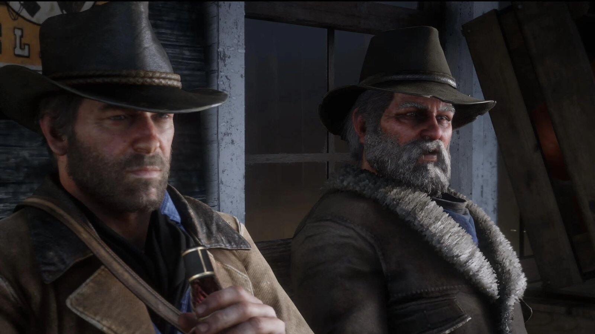

Character · Van der Linde gang
Uncle
Uncle is an aging member of the Van der Linde gang and a companion of the Marston family. His real name is never given: John Marston tells his son that people always called him Uncle, probably because he has always been older than everyone else. He is a supporting character of Red Dead Redemption 2 (2018), set in 1899 and 1907, and of Red Dead Redemption (2010), set in 1911. After the gang breaks up, he helps John and Charles Smith build the ranch at Beecher's Hope in 1907 and lives there with John, Abigail and Jack. In 1911 he is shot dead defending the ranch against the soldiers and agents led by Edgar Ross.
He is played by Spider Madison in Red Dead Redemption and Undead Nightmare, and by James McBride in Red Dead Redemption 2, a role first given to John O'Creagh, who died during production.
- Real name
- Never given in either game
- Born
- Not given; he is one of the oldest members of the gang
- Died
- 1911, Beecher's Hope, shot during the attack on the ranch in "The Last Enemy That Shall Be Destroyed"
- Status
- Deceased; buried on the hill at Beecher's Hope
- Nationality
- American
- Affiliation
- Van der Linde gang (until 1899); Marston family at Beecher's Hope (1907 to 1911)
- Role
- Hanger-on of the gang (1899); resident and ranch hand at Beecher's Hope (1907 to 1911). The Red Dead Wiki lists him as a former thief
- Games
- Red Dead Redemption (also a multiplayer character with the Myths and Mavericks pack, 2011), Undead Nightmare, Red Dead Redemption 2
- Voiced by
- Spider Madison (Red Dead Redemption, Undead Nightmare); James McBride (Red Dead Redemption 2), with singing by John O'Creagh, first cast in the role, who died in 2016
Biography
Origins
The games give no birth date for Uncle. At camp in 1899 he tells Josiah Trelawny that he comes from Ohio. When Arthur Morgan asks his age during "Go Rustling", he jokes that he was born somewhere between the fall of 1849 and the fall of Rome; the Red Dead Wiki takes this to mean a birth before autumn 1849. In another camp conversation he says that his father once beat him so badly he was not sure he would see the next day, and that the lesson he kept was to care only about the present. According to the Red Dead Wiki, he also tells the story of a relative named Jeb, a cousin of his maternal uncle, who kept asking him to go fishing. Uncle sent his brother's friend Ned instead, and Ned ended up stabbing Jeb.
Both his parents died when he was nine. Everything known of his adult life before the gang comes from his own stories. He has been married at least twice: during "Go Rustling", he says that his second wife called him ageless but left him for a younger man. At camp he talks about a past running women, which the Red Dead Wiki reads as a past as a pimp, about a trip to Timbuktu and about a voyage to Brazil that he missed (see Relationships, under Hosea Matthews and Simon Pearson). According to the Red Dead Wiki, he also claims he sold camping supplies in East Africa, was worshipped as a god in the Congo and fled when the locals wanted him to marry their chief's daughter. None of these stories is confirmed anywhere else in the games.
The games do not say when he joined the Dutch van der Linde gang. According to the official guide to Red Dead Redemption 2, cited by the Red Dead Wiki, he brought Abigail Roberts, an orphan working as a prostitute, into the gang around 1894; she became John's partner, and their son Jack was born around 1895. Around 1897 he took part with Arthur and Bill Williamson in a bank robbery near Canada; when Uncle brings it up in "High and Low Finance", Arthur recalls that he was the lookout, and not a good one. The game does not say what part he played in the failed ferry robbery in Blackwater, in 1899, after which the gang flees into the mountains.
Red Dead Redemption 2 (1899)
Chapter 1: Colter
Uncle flees into the Grizzlies with the rest of the gang and takes shelter in Colter, an abandoned mining town in Ambarino, where he spends the following weeks with most of the camp. In "Old Friends", Arthur comes back from the raid on an O'Driscoll camp with a prisoner, Kieran Duffy. Uncle and Bill come out of a cabin, and Dutch tells them to tie the captive up somewhere safe and to starve him first. The two men drag Kieran away while he insists that he is not an O'Driscoll.
In "The Aftermath of Genesis", Arthur and Charles Smith bring two deer back from a hunt to Pearson's kitchen, where Uncle is drinking with the cook. Uncle complains that they have not spoken for days; Arthur answers that he does his best to avoid him. Uncle tells the others that this is Arthur's sad way of showing affection, Arthur denies it and tells him to get lost, and Uncle leaves the cabin. When the snow clears, the gang moves east in "Eastward Bound". At the new camp of Horseshoe Overlook, above Valentine, Uncle is sitting at a table with Tilly Jackson and gets up, bottle in hand, as Dutch arrives. Dutch then gathers the gang, tells everyone to get to work and names Uncle and Reverend Orville Swanson as the two who must stop living off the others. Several members of the gang laugh.
Chapter 2: Horseshoe Overlook
"Polite Society, Valentine Style" begins with Arthur waking Uncle, who is asleep in camp and says he was thinking. Arthur proposes a trip to Valentine to look for opportunities, and Uncle agrees, saying he has errands to run. Karen Jones, Mary-Beth Gaskill and Tilly, bored after two weeks in camp, ask to come along. The group leaves by wagon, Arthur at the reins and Uncle giving directions, while the women sing a bawdy song at Uncle's request. On the road, a stagecoach loses its horses. Tilly asks which of the men will help the driver, and Uncle pleads his lumbago, a condition he insists is very serious. Arthur can catch the runaway horse or refuse. If he helps, Uncle calls him a fairy godmother and Mary-Beth calls Uncle a repulsive old lizard; if he refuses, Karen asks Uncle why he did not help, and he answers that his lumbago is serious and can be deadly.
In Valentine, Uncle points out the sheriff's office and suggests Arthur could pick up bounties there; when Arthur asks why he does not take the risk himself, Uncle answers that it is a young man's game. They park near the stables, and Uncle sends the women off to work the town. On the walk to the general store, he tells Arthur that he is a sad man but that Arthur loves him; Arthur ranks him third among his favorite parasites, after ringworm and rats with the plague. In the store, Uncle picks up a bottle of whiskey and suggests that Arthur buy coffee, a chocolate bar or a cigar (the suggestion varies). If Arthur waits for him, Uncle also buys food, looks at a jaw harp and explains that he has a lot to replace after the mountains. The two then share the whiskey on a bench outside. Uncle remarks that at this point in his career he had pictured himself married to an heiress, and Arthur falls asleep.
Mary-Beth wakes them with a lead: a train full of rich tourists, bound for Saint Denis, that will cross Scarlett Meadows at night. Uncle says he knows the area and that it is quiet out there. Across the street, a man from the Foreman family grabs Tilly; Uncle predicts that Arthur will murder him. Arthur drives the man off, sends Tilly back to Uncle and Mary-Beth and asks Uncle to look after her while he goes to find Karen at the hotel. Back together, the group is approached by a rider who asks Arthur whether he was in Blackwater a few weeks earlier. Uncle says he does not like this. Arthur tells him to take the women home and chases the stranger, Jimmy Brooks, on a borrowed horse. The train lead comes back to Arthur through John: in "Pouring Forth Oil I", John says that Uncle told him what Mary-Beth overheard.
According to the Red Dead Wiki, Arthur can also come across Uncle at Keane's Saloon in Valentine during this period, about to be dragged into a brawl, and may step in or leave him to it. At the end of "A Strange Kindness", the last mission of the chapter, the gang leaves Horseshoe Overlook and joins Arthur at a new camp on the shore of Flat Iron Lake, at Clemens Point in Lemoyne. Uncle moves south with the others.
Chapter 3: Clemens Point
"An Honest Mistake" starts at Clemens Point, where Molly O'Shea calls Arthur over to talk about Dutch. Uncle interrupts with a tip: a supply wagon that is supposed to travel without guards. Arthur hesitates, then agrees on condition that Uncle comes too, and Charles and Bill join them. At the crossroads they stop the wagon, but the driver turns out to work for Cornwall Kerosene & Tar. While Arthur and Charles search the cargo, a large number of Leviticus Cornwall's guards ride in, and the four gang members flee on horseback into the woods. They hide in an abandoned barn to shake off their pursuers.
At nightfall, a group of guards searches the farm, and a squatter living in the house tells them he heard noises in the barn a few hours earlier. Bill knocks over a bucket and gives them away; Charles shoots the guard Lowe, and a second guard, Cooperforth, falls to Arthur or Uncle. A smashed lantern sets the barn on fire during the shootout, and the four men retreat into the trees, where they split into pairs: Uncle stays with Arthur, Charles with Bill. In the woods, a guard overpowers Uncle; Arthur can save him, and Uncle scolds him if he does not. The two pairs meet again, finish off the last pursuers and share out the take before riding back to camp separately. According to the Red Dead Wiki, Uncle then declares himself officially retired from robbery.
When Jack disappears after the Rhodes ambush in which Sean MacGuire is killed, Uncle does not ride to Braithwaite Manor with the others in "Blood Feuds, Ancient and Modern". In "The Battle of Shady Belle", Pinkerton agents Andrew Milton and Edgar Ross walk into Clemens Point, and Milton offers the others three days to disappear if Dutch surrenders; the gang refuses. Uncle moves with the camp to Shady Belle, an abandoned plantation house in the bayou near Saint Denis.
Chapter 4: Saint Denis
At Shady Belle, once Jack has been brought back from Angelo Bronte's mansion, Uncle can take Arthur on a night job, "Go Rustling". He has spotted cattle at Hill Haven Ranch, in Scarlett Meadows, belonging to a man called Squears whom he has met before and describes as permanently drunk. Arthur is reluctant after the trouble the gang has caused in the area, but agrees when Uncle promises good money. At the ranch, two other rustlers are after the same herd; Arthur can scare them off or shoot it out with them. Arthur shoots the lock off the pen, and the noise wakes Squears. He comes out yelling at them and, staggering toward them, hits a post of his own porch and falls unconscious.
Uncle and Arthur drive the cows to the Davies brothers' pens at Clemens Cove. Clay Davies offers fifty dollars at most, because Squears is an acquaintance of his; Arthur haggles him up to a hundred, which Clive Davies pays. As agreed at the start, the money is split between the two men, with sixty percent going to Arthur, and none of it goes into the camp fund. Uncle asks Arthur to ride back with him, and Arthur declines.
"High and Low Finance", a companion activity reserved for the Special and Ultimate editions of the game, also starts at Shady Belle. Charles has bought plans of the Bank of Rhodes that show a weak point in one wall, and he, Arthur and Uncle decide to blow it open with dynamite. On the way, Arthur asks Uncle whether he has ever robbed a bank, and Uncle cites the job near Canada a couple of years earlier (see Origins). Behind the bank, the three wait for dark. Arthur takes out the guard without being seen, unrolls the cable with Charles and sets off the charge. Uncle keeps watch for the law while Arthur and Charles empty the safes. They escape the lawmen and regroup near Shady Belle with 137.50 dollars. After the getaway, Uncle tells Charles that he feels the two of them will be good friends one day.
Uncle has no part in "Banking, The Old American Art", the robbery of the Saint Denis bank that ends the chapter. The job fails: Milton shoots Hosea in the street, Lenny Summers is killed, John is arrested and later sent to Sisika Penitentiary, and Dutch, Arthur, Micah Bell, Bill and Javier Escuella escape on a ship. Uncle stays on the mainland with the women and the members of the camp who took no part in the robbery.
Chapter 5: Guarma
While the ship's passengers are stranded on the island of Guarma, Sadie Adler moves those left behind, Uncle among them, from Shady Belle to Lakay, an abandoned settlement in the bayou. In "Fleeting Joy", Arthur, then Micah, Javier, Dutch and Bill find the group at Lakay, where Leopold Strauss tells Dutch that they owe their survival mostly to Sadie. The reunion is cut short by a Pinkerton attack on the settlement, which Arthur, Sadie and Bill beat back. The gang must leave Lemoyne's bayou and head north. In "That's Murfree Country", Arthur and Charles clear the Murfree Brood out of Beaver Hollow, a cave in Roanoke Ridge, and the camp moves there.
While the new camp is being set up, Uncle arrives with Molly O'Shea, who is drunk; according to the Red Dead Wiki, he says he found her in Saint Denis. In front of the gang, Molly claims she told the Pinkertons about the Saint Denis bank job, and she taunts Dutch. Dutch draws on her, and Arthur asks him to spare her. Susan Grimshaw fires first and kills Molly with a shotgun. She tells Arthur that Molly knew the rules, then has Bill and Pearson burn the body.
Chapter 6: Beaver Hollow
Uncle is still at Beaver Hollow during the first part of chapter 6, where he makes no secret of his distrust of Micah. The Red Dead Wiki lists him in "Money Lending and Other Sins VII", in which Arthur throws Strauss out of the camp, and in "My Last Boy", which opens in the camp when Eagle Flies and Wapiti warriors ride in to ask the gang to fight the Army at the Heartland Oil Fields. The mission pages do not say what Uncle does in either of them. After "My Last Boy", he is no longer at the camp. Karen, Pearson and Mary-Beth have gone as well.
At the start of "Our Best Selves", Dutch tells Arthur that Uncle, Pearson and Mary-Beth have run off, and calls them cowards. Arthur answers that they do not want to die. Uncle's departure is not shown on screen. He therefore takes no part in the train robbery that follows, nor in the collapse of the gang: Arthur's death, Micah's betrayal and the dispersal of the remaining members. The game shows nothing of his life between 1899 and 1907.
Epilogue (1907)
Epilogue 1: Pronghorn Ranch
Uncle reappears in 1907, at the end of the first part of the epilogue. John, who has been working at Pronghorn Ranch under the name Jim Milton, has been left by Abigail, who took Jack with her. To win her back, he buys land at Beecher's Hope, in the Great Plains of West Elizabeth, with a loan from the Blackwater banker Ansel Atherton. In "Home of the Gentry?", John deals with the squatters living in the only building on the land, a ruined shack, then returns to Blackwater and signs the papers. Outside the bank, he runs into Uncle in the street. According to the Red Dead Wiki, Uncle had thought John was dead and is overjoyed to see him.
The two ride out to the ranch together. Uncle discovers that John's property is a decrepit shack, and tells John that he is very sick with lumbago. After hearing what happened between John and Abigail, he announces that he is going to help John build up the ranch, whether John wants him to or not. He moves into the shack.
Epilogue 2: Beecher's Hope
In "Bare Knuckle Friendships", John finds Uncle lazing inside the shack and scolds him for it. Uncle then tells him that Charles is alive and in Saint Denis. The two take the train to the city. There, Uncle offers to search the saloons and sends John to the slums; John reverses the plan and checks a saloon or the fence himself. Hearing of a "big Indian" at a boxing match in the slums, John goes there and finds Uncle already waiting. The two spot Charles, who had believed John dead. Charles wins his fight against "Simon of Wales". As Charles leaves to collect his bag at the docks, Uncle says he has a few errands to run and will catch up later. John and Charles fight off Guido Martelli's men and flee the city by wagon. Uncle meets them outside Saint Denis, and the three ride back to Beecher's Hope.
"Home Improvement for Beginners" opens at the campfire outside the shack, where Uncle and Charles are sitting. Uncle says it feels like old times, with the old gang back together; John hopes things will not end like the last time. Uncle then lays into him. He calls John sour, says no woman would stay with him, calls him hopeless and mocks his promise to Abigail that he has changed. The shack, he says, is a dump and has to go: John should build a house a lady would set foot in. He hands out rope, has John and Charles tie the shack to their horses and pull it down, then tells them about Albert Cakes, whose Cakes Hardwood & Timber yard in Blackwater sells pre-cut houses. John goes alone, refusing to take Uncle with him, and tells Charles to make Uncle work, and to whip him if he has to.
In "The Tool Box", John buys the pre-cut house, collects tools at Manzanita Post and brings the materials back through Tall Trees with Charles and two hired guns, losing one of them, Wayne, to the Skinner Brothers. Uncle is asleep when the wagons pull in. He hears about Wayne's death, helps John unload the timber while Charles takes the body home to be buried, and says the three of them will manage. In "A New Jerusalem", the three assemble the house. Uncle gives the orders and cites his lumbago to avoid the work, while John and Charles lay the foundation, raise the frame and put on the roof over several weeks. Once the house is finished, Uncle raises a toast to their new home, at least, he adds, until John gets his woman back. John then writes to Abigail about the land, the house and his reunion with Charles and Uncle.
"A Quick Favor for an Old Friend" opens with Uncle dozing under a tree, which earns him a scolding from John for his laziness. Uncle answers with a question about reincarnation, then turns to the ranch: the land would suit grazing animals, and animals would need a barn. When John objects that building one would take the three of them six months, Uncle tells him to buy it pre-cut, like the house. The two go to Albert Cakes's yard, where John picks a barn from the catalogue. At the bank, Uncle's conduct irritates Atherton, who turns down a second loan, and John takes Uncle to task once they are back outside. Sadie then appears and takes John on a bounty hunt. According to the Red Dead Wiki, Uncle later helps put up the barn.
"Uncle's Bad Day" begins with John, Uncle and Charles celebrating the finished house and barn: the three men drink, sing and dance, John even running after Uncle with Charles riding on his back. The next morning, Charles wakes John on the floor of the house: Uncle is missing. Tracks outside show that the Skinner Brothers have taken him. On the trail, Charles warns that they may have to put Uncle out of his misery, depending on what the gang has done to him. John and Charles leave their horses near the hideout and continue on foot. Through binoculars, John sees Uncle tied to a spit above a fire, his bare back badly burned.
Charles and John each have to pull a Skinner off the other, and the noise alerts the camp. John cuts Uncle loose and covers Charles, who carries him back to the horses under fire. Charles puts Uncle on his own mount and they escape. At Beecher's Hope, Charles takes Uncle inside to treat his burns and tells John that the Skinners, having lost most of their men, should now leave the ranch alone. Uncle recovers at the ranch. Some time later, in "The Best of Women", Abigail and Jack arrive at Beecher's Hope, and from then on Uncle lives with the reunited family. The Red Dead Wiki also lists him in "A Really Big Bastard", the mission in which Sadie visits the family and takes John after a bounty in Tall Trees; the mission page does not describe his part.
"A New Future Imagined" opens with Abigail and Uncle bickering over his poor work ethic, before John and Abigail leave for a day in Blackwater, at the end of which John proposes. "American Venom" begins indoors, as Jack finishes reading a knight's story aloud to his mother and Uncle. Uncle says he loves it and asks Abigail what is for dinner; she calls him a parasite and tells him to cook it himself, and John agrees that it is not a bad idea. Sadie then arrives with a lead on Micah, and John decides to ride with her and Charles despite Abigail's pleas. Leaving, he asks Uncle to keep an eye on the place, and Uncle says he will.
On Mount Hagen, John kills Micah with Dutch's help and finds in Micah's cabin a large sum of money and gold, most of it from the Blackwater ferry robbery. When John, Sadie and Charles ride back, Abigail calls Jack and Uncle outside, and John tells her it is all over. The money pays off the loan. The closing credits show John and Abigail's wedding, attended by Jack, Uncle, Sadie and Charles; Uncle plays the banjo. Charles and Sadie later leave Beecher's Hope for good. Uncle stays on at the ranch with the Marstons.
Red Dead Redemption (1911)
From 1907 to 1911, Uncle lives at Beecher's Hope, which the Marstons work as a ranch. In 1911, agents of the newly created Bureau of Investigation, led by Edgar Ross, take Abigail and Jack away. The Bureau holds them to force John to track down Bill Williamson, Javier Escuella and Dutch van der Linde. Uncle is left in charge of the ranch. He does not appear in the first two acts, while John hunts his former companions in New Austin and Mexico.
Act III: West Elizabeth
In "The Outlaw's Return", John, released by the government, walks into the yard of Beecher's Hope. After Abigail and Jack have greeted him, Jack explains that coyotes ate all the chickens and poachers took the cattle. Uncle immediately tells the boy not to blame him. John answers that he blames no one, but that with Uncle still alive there are four mouths to feed and no cattle. When Uncle asks for a warm embrace, John tells him to be grateful that he has not shot him, since he was supposed to look after the place. Uncle says he did his best, then lines up excuses: there were too many of them, he thought John was dead, he was not drinking. John tells him to pick one. He leaves the next morning with Jack to buy a new herd at MacFarlane's Ranch. On the way, Jack mentions a gentleman's complaint that Uncle told him about, and John calls Uncle a dirty old fool.
Uncle gives John two jobs on the ranch. In "By Sweat and Toil", John finds him asleep in the afternoon sun and threatens him with a long sleep that would cost less in food. Uncle calls John a hard and nasty man, John calls him a useless, conniving thief, and Uncle complains that picking on the elderly is easy but not dignified. John finds the near pasture overgrazed, and the two drive the cattle toward the plains. Bandits blow up the tracks to rob a train heading for Blackwater, and the explosion stampedes the herd. Uncle urges John to stay out of trouble. If John rides off to stop the robbery, Uncle goes after the cattle alone and greets him on his return as the hero. Together they get the herd to new grazing. When John asks him to stay with the cows, Uncle refuses: John has had enough work out of him for one day.
In "A Continual Feast", Uncle is watching wild mustangs through a spyglass from a hilltop and wondering whether they are worth rounding up. John answers sarcastically that a ranch close to broke could hardly use good horses, and the two set off. On the ride, Uncle says he did his best while John was away, and John replies that his best is anybody else's worst. John breaks three horses. On the way back, Uncle claims he was a rancher himself and that John only had to ask; John does not believe him and lists what Uncle actually taught him, such as stealing beer behind a bartender's back. At the ranch, Uncle hopes the horses will bring some money, and John answers that every cent goes back into the ranch. Uncle asks at least for a bottle for his aches, and John tells him never to hire the people he drinks with.
In "Spare the Love, Spoil the Child", Uncle runs to John: he has seen Jack in the valley, heading up the pass to track a grizzly reported there, and he says John's hunting stories got the better of the boy. Uncle says he tried to stop him. John tells him he is as worthless as a lawyer at a lynching and warns him that if anything happens to his son, Uncle will wish the bear had attacked him instead. John follows the dog Rufus to Nekoti Rock, kills the bear and brings Jack home. Before the final mission, Uncle can be seen repairing the ladder of the corn silo, which is missing three rungs until then.
"The Last Enemy That Shall Be Destroyed" begins in the barn, where John is talking with Jack. Outside, Uncle is looking through a spyglass; he calls John over and shows him soldiers and lawmen riding toward the ranch. John sends Jack into the house, telling him to keep the doors locked, and Uncle tells the boy to run. John remarks that things are about to be settled once and for all, and Uncle agrees. The two men hold off the first wave together. Uncle tells John to go inside because more are coming. Jack comes out onto the porch with a rifle anyway, and the three fight on. Uncle is hit. Jack asks whether he is all right.
After two more waves, John tells Uncle to hang on and promises to get him out safely. Uncle answers that there is no time and that he will not make it off the porch; he tells John to take Jack and Abigail away and not to worry about him. He dies on the porch, shot in the chest according to the Red Dead Wiki. Jack cries out that they have killed him, and John tells his son there is nothing they can do for him now. The family runs past his body to the barn. John sends Abigail and Jack away on a horse and is shot down by Ross's men outside the barn. Abigail and Jack bury John on the hill above the ranch, beside Uncle. According to the Red Dead Wiki, Uncle's grave marker gives no birth year and bears the words "Impossible to forget". In 1914, Jack buries his mother on the same hill, next to John and Uncle.
Undead Nightmare (non-canon)
Undead Nightmare, an expansion released in 2010, is not part of the series' canon. It is set at Beecher's Hope at a time when John, Abigail, Jack and Uncle are all alive. Uncle appears in a single mission, "Love in the Time of Plague". On a stormy night, Uncle has not come home. Abigail had assumed he was out with John and tells her worried husband that the old man can look after himself; the family eats without him. After the meal, Jack talks about the book he is reading, a story about the ancient Aztecs and a curse that brings a plague, and everyone goes to bed.
That night a bloodied, snarling Uncle enters the couple's bedroom and lunges at John, who seizes him by the neck and knocks him down with a lamp before going for a shotgun. By the time John is back, Uncle is up again, has driven Abigail outside and has bitten her. John shoots him in the head; the mission objective tells the player to put Uncle out of his misery. Abigail, now infected, then bites Jack, and John ties up his wife and son and leaves Beecher's Hope in search of a cure.
Personality
Rockstar's character description, published on September 6, 2018, reads: "A hanger-on and good-time guy, Uncle is always around when the whiskey is open and never around when there's any work to be done. If he wasn't so entertaining, Dutch would have cut him loose years ago." A character biography page from an official guide, reproduced on the Red Dead Wiki, opens with almost the same sentence and continues: "Nobody is quite sure how old he is, how he's still alive, or if he's actually anybody's uncle. He's lived a colorful life that gets more vibrant with every story he tells. He claims to have had many wives and to have traveled to every corner of the globe; he also asserts he has terminal lumbago." In the guide's version, it is the gang, not Dutch, that would have cut him loose. The Red Dead Wiki also quotes The Complete Official Guide, which calls him "not exactly the most productive" member of the gang, a whoremonger and a drunkard. The wiki's infobox lists thief among his former occupations.
His excuse for avoiding work is lumbago, a pain in the lower back that is not a fatal condition; he presents it as a deadly illness, in 1899 and again in 1907. Arthur, John, Abigail, Dutch and Micah all reproach him for his idleness at some point (see Relationships). John sums up his routine in 1911, in "A Continual Feast": asleep half the day, and the other half so drunk that he "couldn't hit the ground with your hat in three throws". Whiskey comes first on his shopping list in Valentine: "A drop of whiskey for a start." He is also a teller of tales whose stories the games never confirm (see Origins).
At Horseshoe Overlook he tries more than once to lift the camp's mood, with his father's lesson about living in the present (see Origins) or by calling for a song (see Bill Williamson). A newspaper tells him that the United States is going to war in the Philippines; he says he neither understands the war nor approves of it. At the Clemens Point campfire he says the country gets worse every year, and names wars, the legacy of slavery and greed. According to the Red Dead Wiki, he also has a grudge against the British: he calls their voices silly and the people stuffed-shirted windbags.
In his own words
The Red Dead Wiki opens its page on him with this line: "It's like people call me lazy. I'm not lazy, just don't like working. There's a difference." In "Polite Society, Valentine Style" (1899), Arthur finds him asleep at camp. "I was thinking," Uncle says. Arthur: "Does it pay well?" Uncle: "Eventually." On the road, when Tilly asks who will fetch a stranded driver's horse: "Oh, I got lumbago, it's very serious!" If Arthur rides on, Karen asks him why he did not help, and he answers: "L-lumbago! It's really serious, it can be deadly." In 1907 the wiki's quote list gives his version to John, in "Home of the Gentry?": "I'm real sick, John. Lumbago. It's a slow and painful death, my brother."
In 1911, when John wakes him in "By Sweat and Toil": "Nothing worse for an old man than sleeping in the warm afternoon sun." Riding out in "A Continual Feast", he pleads his age: "Come on, I'm getting old. I gotta start taking things easy." John answers: "You've been taking things easy for forty years."
Names
Neither game gives his real name. In "Wolves, Dogs and Sons" (1911), Jack first asks whether Uncle is really John's uncle. John says he sincerely hopes not, and adds: "He's probably lots of people's father, though." Jack then asks why they call him Uncle, and John answers: "Folks always did. Probably 'cause he's always been older than everybody else." According to the Red Dead Wiki, Uncle says in a camp scene that before people called him Uncle, as a little boy, they called him nephew. Rockstar's French text and the French Red Dead Wiki call him l'Oncle.
In Valentine he tells Arthur that in his youth he "used to be known as the 'one-shot kid'"; Arthur says he will not ask why. He speaks of himself in the third person as Old Uncle ("Trust Old Uncle."). John calls him old man throughout Red Dead Redemption ("Get up, old man.", "What are you looking at, old man?"), and Arthur greets him at Colter as the "camp rat". The Red Dead Wiki lists Uncle, Old Man and One-Shot Kid as his names, the last marked as self-claimed and unconfirmed.
Appearance
The guide's portrait shows a heavy-set man, bald on top, with gray hair at the sides, a full gray beard and a red face, wearing a blue bandana, suspenders and worn trousers, a bottle of whiskey in his hand. The Red Dead Wiki notes that the bandana sets him apart: most gang members wear black ones, and only Dutch and Lenny also wear another color. In all three periods he keeps a brown hat and a gun belt with a single holster, according to the Red Dead Wiki. In 1911 he wears a single beige glove on his right hand, and his beard has a yellow-brown stain that is absent from Red Dead Redemption 2.
Relationships

John Marston
Uncle has known John since John was a boy; in 1911 John tells Jack that Uncle was already old when he himself was a kid. In 1907 the two meet again in Blackwater and Uncle settles at Beecher's Hope with him, whether John wants it or not (see Biography). Uncle greets him as JM and nicknames him the rock farmer. At the campfire of "Home Improvement for Beginners" he runs down John's temper and his shack (see Biography). According to the Red Dead Wiki, once the house is built John credits Uncle with steering the ranch in the right direction, however much he irritates him.
In 1911 John comes home to a run-down ranch with no cattle; their exchanges in "The Outlaw's Return" and "By Sweat and Toil" are told in the Biography. According to the Red Dead Wiki, John reminds him in "A Continual Feast" that he and Abigail were the only ones in the gang who looked out for him. Uncle dies on the porch defending John's family, and John is later buried beside him (see Biography).

Abigail Marston
At Beecher's Hope in 1907 she scolds him for his idleness and sends him off when he asks about dinner (see Biography). According to the Red Dead Wiki, around the homestead Uncle tells her that all good things start with a good woman and that John is the luckiest man alive, words he says he got from Arthur. In 1911, back home after her detention by the Bureau, she sends John to Bonnie with the corn sacks, "'Bout the one thing Uncle didn't manage to have stolen while we was gone."

Jack Marston
Uncle is part of the gang Jack grows up with, and of the household at Beecher's Hope from 1907. He praises the story Jack reads aloud before "American Venom" (see Quotes). Jack repeats what Uncle teaches him: Uncle is the one who told him about the morning drip, and who says most fights are caused by poker or women. The Red Dead Wiki adds that Uncle tells him how he once beat up several Englishmen in a bar. In 1911 Uncle is the one who warns John that Jack has gone after a grizzly (see Biography). In 1914 some of Jack's lines still quote him: "Uncle warned me about women like you."

Arthur Morgan
Arthur teases Uncle constantly, and Uncle claims to see affection in it (their exchange at Colter is under Quotes). At Shady Belle, Arthur turns away a drunk Uncle who wants to chat, and Uncle needles him about drinking cow piss rather than milk. According to the Red Dead Wiki, Uncle laughs off a joke of Arthur's about his age by saying he will outlive them all. The two ride together in "An Honest Mistake" (see Biography) and in the two companion activities (see Skills). According to the same wiki, once the gang starts to fall apart Arthur can tell him to leave before it is too late, and in another camp chat Arthur says he is dying; Uncle answers that he is a good man.

Dutch van der Linde
Uncle tells Micah that he and Dutch go back a long way. Dutch tolerates his idleness up to a point: at Horseshoe Overlook, in "Eastward Bound", he names him in front of the camp: "Uncle, Reverend Swanson... no more passengers." According to the Red Dead Wiki, in a camp conversation Uncle accuses Dutch of wanting to be an American king leading his knights and the people toward a new way of living; Dutch replies that he only wants a better life for the gang, and Uncle retorts that it is better by Dutch's own measure. Dutch says he cannot stay angry with him. The wiki lists Your Misery among the names Uncle gives Dutch. After "My Last Boy" Uncle is gone from Beaver Hollow, and Dutch counts him among the cowards (see Biography).

Hosea Matthews
At the campfire Hosea tells Uncle and others his stories: the town where he was almost lynched after slipping into a house and claiming to be the oldest friend of the family's dead uncle, and the time he crept onto a stage and ruined his part. Arthur calls the pair a couple of crazy old men. Hosea's memories of acting in theaters and streets along the big rivers draw from Uncle the remark that he was more into running women. Uncle's own turn comes with Timbuktu: Hosea has heard that tale too often to believe it, and leaves for bed. According to the wiki page on "Eastward Bound", an annoyed Hosea can tell Arthur to go and bother Uncle instead.
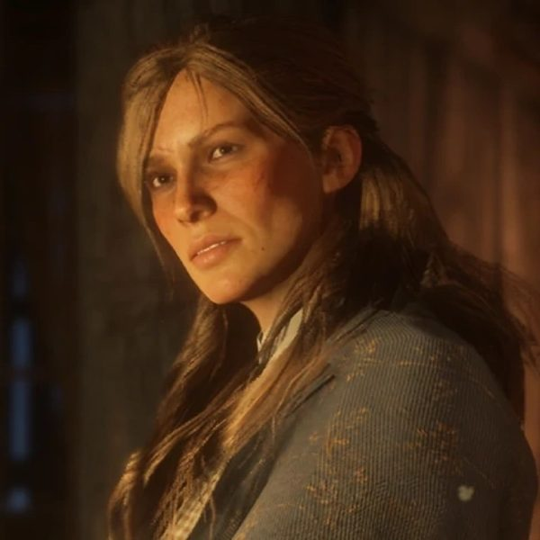
Sadie Adler
In 1907, according to the Red Dead Wiki, Uncle scolds John if he comes back to him after "Home of the Gentry?" without having met Sadie yet. Sadie finds John and Uncle outside the Blackwater bank in "A Quick Favor for an Old Friend" and offers John the Cortez bounty. Both attend John and Abigail's wedding; Charles and then Sadie later leave the ranch for good, while Uncle stays with the family.

Charles Smith
At the poker table Uncle fails to draw Charles into conversation. At the campfire Charles says that silence is sometimes better; Uncle replies that he will have all eternity for that. In 1907 Uncle tells John where to find Charles, and the three build Beecher's Hope together; Charles carries him out of the Skinner Brothers' camp and tends his burned back (see Biography), then leaves the ranch after the wedding.

Simon Pearson
Uncle is a fixture of Pearson's kitchen and campfire. At Horseshoe Overlook Pearson, nearly shouting, insists that things could be far worse, and remembers a crew stuck at sea with men dying of hunger and disease. Uncle offers to swap: he lost both parents at nine and grew up alone in a city he did not know (see Origins). Pearson concedes that every life is hard in its own way. Another night, Pearson's sea stories prompt one of Uncle's, about getting lost in the Congo. At Clemens Point Uncle asks him whether he misses the sea; Pearson does, but feels too old to go back. Uncle answers with the captain's wife he once fell for: the two were to sail to Brazil, and he missed the boat because he was drunk. Pearson and Uncle are among those who leave Beaver Hollow after "My Last Boy"; Dutch names them, with Mary-Beth, at the start of "Our Best Selves".

Bill Williamson
When they eat together, Bill notes that Uncle is always first in the food line, and Uncle replies that Bill is never far behind. The two also remember Mac Callander together. One evening Uncle sets out to cheer the camp up: he asks Bill what is on his mind, changes the subject before Bill can say, then calls for a song that nobody offers to sing. Bill rides on Uncle's lead in "An Honest Mistake" (see Biography).

Micah Bell
Micah is the one gang member Uncle openly distrusts. At the Horseshoe Overlook campfire Micah goes after him more than once: Uncle is useless, should pull his weight, and ought to be put out of his misery. Uncle snaps back with an aggression he shows no one else in camp, and Micah passes it off as a joke. Micah also calls him a parasite, asks why Dutch keeps him around, and says Uncle would be the first one he would kill; Uncle tells him he is no better than anyone else in camp.

Javier Escuella
At Horseshoe Overlook Uncle comes over as Javier drops money in the camp box, and Javier offers him a drink. The money comes from a soldier Javier robbed on the road; Uncle says his own work has mostly been thinking, and that only big jobs interest him. The scene ends on Javier's guitar, which on other nights accompanies Uncle's songs. After Guarma, according to the wiki's page on Arthur's relationships, Javier doubts the loyalty to Dutch of several members, Uncle among them.

Susan Grimshaw
At Horseshoe Overlook Uncle asks Susan to come into town with him for the evening. She says yes, then backs out once she sees that all he wants is money. She often sings with him at the poker table and the campfire (see Skills).

Karen Jones
On the wagon to Valentine, Tilly remarks on the smell of the sheep and Karen asks: "Or is that Uncle?" She also questions him about the stranded driver (see Personality) and often sings with him in camp (see Skills).

Mary-Beth Gaskill
On the road to Valentine, if Arthur helps the stranded driver, Uncle mocks him as a fairy godmother; Mary-Beth replies that Arthur has a heart and Uncle has none, "you repulsive old lizard". Uncle: "Lizards have hearts!" She, Uncle and Pearson are the three members Dutch names as gone at the start of "Our Best Selves" (see Biography).
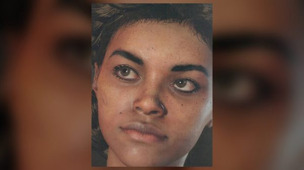
Tilly Jackson
Tilly rides with Uncle and Arthur to Valentine in "Polite Society, Valentine Style"; her question about who will fetch the stranded driver's horse draws his lumbago excuse (see Personality).

Orville Swanson
Swanson shakes Uncle awake to accuse him of badmouthing him. Uncle's only reply is to moon him, and Swanson leaves, disgusted. The scene can occur from Horseshoe Overlook to Shady Belle.

Josiah Trelawny
At the Shady Belle campfire Uncle asks Trelawny where he is from. Trelawny first says the moons of Jupiter, then, after Uncle's guesses, Cornwall, home of the original Celts; asked what it is like, he admits he has never been there. Uncle says he is from Ohio, and that he, at least, has been there.

Molly O'Shea
Molly is talking with Arthur about Dutch at Clemens Point when Uncle cuts in with his tip about a supposedly unguarded wagon (the job of "An Honest Mistake"). On the day the camp moves to Beaver Hollow, he is the one who brings her in, drunk; she dies that same day (see Biography).

Kieran Duffy
At the end of "Old Friends", Dutch has Bill and Uncle tie up Kieran and keep him hungry (see Biography). After Kieran's death, Uncle is among those who can talk to Arthur about it.

Edgar Ross
In 1911 Ross's Bureau holds Abigail and Jack, leaving Uncle in charge of Beecher's Hope while John hunts his former gang. Uncle is killed when the soldiers and agents Ross brings to the ranch attack it in "The Last Enemy That Shall Be Destroyed".
Skills, weapons and horses
With the gang in 1899
Uncle rarely takes part in jobs, but he brings in leads: the wagon of "An Honest Mistake" and the cattle of "Go Rustling", a tip he picked up drinking in Rhodes, according to the Red Dead Wiki. In "Polite Society, Valentine Style" he is the one who knows the road to Valentine (see Biography). On bank jobs he keeps watch: he was the lookout on the robbery near Canada (see Biography) and, according to the Red Dead Wiki, at the Bank of Rhodes in "High and Low Finance". The Red Dead Wiki lists him as the giver of "Polite Society, Valentine Style", "An Honest Mistake" and "Go Rustling".
He is the partner of two companion activities. "Go Rustling" unlocks after "Angelo Bronte, A Man of Honor" and is the only companion activity offered only at night (the sale and the split of the money are told in the Biography). "High and Low Finance", given by Charles, was reserved for owners of the Special and Ultimate editions of the game. Camp events involving Uncle start after "Polite Society, Valentine Style". He can be tracked with Eagle Eye. In a random encounter a man threatens him outside a saloon, in Valentine (Keane's Saloon, as Arthur) or in Blackwater (as John, in 1907); stepping in raises the player's honor.
In camp he drinks, sleeps, plays poker and plays the banjo. He sings at the poker table and at the campfire, alone or with Karen, Susan, Sean and Pearson, often to Javier's guitar. The Red Dead Wiki lists, among others, "Come, Bustle, Bustle", "Otis Miller", "One Eyed Riley", "I Asked That Gal to Give Me Some" (sung drunk), "Rinky Dinky Di Lo", "Keyhole in the Door", "The Louisville Maid", "Wild Free Rover", "Ring Dang Doo", "Rye Whiskey", "The Heartland Stage Company" and "The Cowboy". Alone, he starts a lewd song between swigs from his bottle and drops it when the bottle is empty.
At Beecher's Hope, 1907 and 1911
In 1907 he supplies most of the ideas for the ranch, from the pre-cut house to the barn (see Biography). The Red Dead Wiki lists him as the giver of "Bare Knuckle Friendships", "Home Improvement for Beginners", "A New Jerusalem", "A Quick Favor for an Old Friend" and "Uncle's Bad Day". Around the ranch he can be seen sweeping, playing the banjo at night and idling at the spot where he dies in 1911; according to the same wiki, he drinks only while watching the chickens or at the campfire at night.
In 1911 Red Dead Redemption gives him a mission strand of his own, "By Sweat and Toil" (moving the cattle to pasture) and "A Continual Feast" (breaking three wild mustangs); in the first he rounds up the stragglers of the herd (see Biography). The Red Dead Wiki notes that, for all John's complaints, he can be seen at work: making horseshoes outside the barn, mending the ladder of the corn silo with a hammer, tending the animals. At other times he naps around the ranch, and around 8:40 in the evening he can be found smoking at the dinner table.
Weapons and horses
The Red Dead Wiki lists a Winchester Repeater and a Cattleman Revolver among his weapons, and for Red Dead Redemption 2 a custom Schofield Revolver, iron-plated with a brass frame, and a custom Double-Barreled Shotgun with a blackened steel barrel and reddish varnish, which he carries on his back in "An Honest Mistake" and "That's Murfree Country". In "Polite Society, Valentine Style" he still carries a standard Cattleman Revolver. In 1907, if a gunfight breaks out in "Home of the Gentry?", he draws the Schofield or the shotgun. His horses, according to the same wiki: Nell II, a Kentucky Saddler, in 1899; Nell IV, an Appaloosa, in 1907; a Painted Quarter Horse in 1911.
Missions
The English Red Dead Wiki lists 23 story missions of Red Dead Redemption 2 for Uncle, from the flight through the snow to the last mission before the credits, plus two companion activities. It lists five missions of Red Dead Redemption and one of Undead Nightmare. The French edition counts 19 missions for Red Dead Redemption 2: it leaves out "The Aftermath of Genesis", "Money Lending and Other Sins VII", "Home of the Gentry?" and "Bare Knuckle Friendships". For Red Dead Redemption, it adds "This is Armadillo, USA", in which Uncle is only mentioned. Several missions on the English list do not show him in their mission page or transcript; the tables say so case by case. The table for Red Dead Redemption also adds "Wolves, Dogs and Sons", whose transcript gives a conversation about him.
Red Dead Redemption 2, chapters 1 to 6
| Mission | Chapter | Uncle's role |
|---|---|---|
| Outlaws from the West | 1. Colter | Listed by the wiki for the gang's flight into the mountains. Neither the mission page nor the transcript names him. |
| Old Friends | 1. Colter | Comes out of the cabin with Bill when Arthur brings back Kieran Duffy. Dutch orders the two of them to tie the prisoner up and let him go hungry. |
| The Aftermath of Genesis | 1. Colter | Is in Pearson's kitchen when Arthur and Charles bring in the deer. Arthur needles him, then sends him out of the cabin (their exchange is under Quotes). |
| Eastward Bound | 1. Colter | Sits drinking with Tilly when the gang reaches Horseshoe Overlook and gets up, bottle in hand, as Dutch arrives. In his speech, Dutch singles out Uncle and Reverend Swanson (see Relationships, Dutch). |
| Polite Society, Valentine Style | 2. Horseshoe Overlook | Mission giver. Arthur wakes him and they drive a wagon to Valentine with Karen, Tilly and Mary-Beth. He shops at the general store, shares a bottle with Arthur outside, and goes back to camp with the women. |
| A Strange Kindness | 2. Horseshoe Overlook | Listed by the wiki. The mission page does not mention him. |
| An Honest Mistake | 3. Clemens Point | Mission giver, with Molly O'Shea. He brings Arthur a tip about a wagon he believes unguarded and rides out with Arthur, Charles and Bill. The wagon turns out to belong to Cornwall Kerosene & Tar; the four hide in a barn, then split up in the woods, Uncle staying with Arthur. |
| Blood Feuds, Ancient and Modern | 3. Clemens Point | Listed by the wiki. The mission page does not mention him. |
| The Battle of Shady Belle | 3. Clemens Point | Listed by the wiki for the gang's move to Shady Belle. The mission page does not mention him. |
| Fleeting Joy | 5. Guarma | Listed by the wiki for the gang's stay at Lakay. The mission page does not mention him. |
| That's Murfree Country | 5. Guarma | Rides into the new camp at Beaver Hollow with a drunk Molly O'Shea. |
| Money Lending and Other Sins VII | 6. Beaver Hollow | Listed by the wiki. The mission page does not mention him. |
| My Last Boy | 6. Beaver Hollow | Last mission in which he is at the camp. Afterwards he is gone, and in "Our Best Selves" Dutch tells Arthur that Uncle, Pearson and Mary-Beth have run off; Karen is gone as well. His departure is not shown. |
Red Dead Redemption 2: companion activities and encounters
| Activity | Chapter | Uncle's role |
|---|---|---|
| High and Low Finance | 4. Saint Denis | Bank robbery available only in the Special and Ultimate editions. Uncle rides with Arthur and Charles to the Bank of Rhodes, whose wall they blow open with dynamite to rob the safes. |
| Go Rustling (Uncle) | 4. Saint Denis | Offered by Uncle at night. He and Arthur steal cattle from Hill Haven Ranch, whose owner Squears is drunk, and sell them to the Davies twins at Clemens Cove for 100 dollars. |
| Saloon encounter | Free roam | A man threatens Uncle outside a saloon, in Valentine (as Arthur) or in Blackwater (as John, in 1907). Stepping in raises the player's honor. |
Red Dead Redemption 2, epilogue
| Mission | Part | Uncle's role |
|---|---|---|
| Home of the Gentry? | Epilogue 1: Pronghorn Ranch | Runs into John in a Blackwater street after John buys Beecher's Hope, and rides out to the ranch with him. |
| Bare Knuckle Friendships | Epilogue 2: Beecher's Hope | Mission giver. He tells John that Charles is alive in Saint Denis and takes the train there with him. They find Charles at a fight in the slums, and Uncle leaves to run errands. |
| Home Improvement for Beginners | Epilogue 2: Beecher's Hope | Mission giver. At the campfire he mocks the shack, then directs John and Charles as they pull it down with ropes and horses. He sends John to Albert Cakes in Blackwater for a pre-cut house. |
| The Tool Box | Epilogue 2: Beecher's Hope | Asleep at Beecher's Hope when John and Charles bring the lumber back. He helps John gather the planks. |
| A New Jerusalem | Epilogue 2: Beecher's Hope | Mission giver. Pleading his lumbago, he gives orders while John and Charles assemble the house, then toasts the finished home. |
| A Quick Favor for an Old Friend | Epilogue 2: Beecher's Hope | Mission giver. He suggests a pre-cut barn, goes with John to order one from Albert Cakes, then irritates the banker Ansel Atherton. Sadie joins them outside the bank. |
| Uncle's Bad Day | Epilogue 2: Beecher's Hope | Mission giver. After a night of celebration, the Skinner Brothers carry him off. John and Charles find him at their camp, free him and bring him back to the ranch. |
| A Really Big Bastard | Epilogue 2: Beecher's Hope | Listed by the wiki. The mission page does not mention him. |
| A New Future Imagined | Epilogue 2: Beecher's Hope | Opens with Abigail scolding him over his work, before the Geddes brothers deliver furniture to the ranch. |
| American Venom | Epilogue 2: Beecher's Hope | Before the mission, he listens to Jack reading aloud. When John leaves with Sadie and Charles, he agrees to keep an eye on the place. In the credits he plays the banjo at the wedding and stays at the ranch with the family. |
Red Dead Redemption, 1911
In Red Dead Redemption, Uncle has a mission strand of his own at Beecher's Hope: "By Sweat and Toil", then "A Continual Feast". Both lead, with the Abigail and Jack strands, to "The Last Enemy That Shall Be Destroyed".
| Mission | Act | Uncle's role |
|---|---|---|
| This is Armadillo, USA | Act I: New Austin | Mentioned only. When Bonnie MacFarlane asks who is looking after John's farm, John names Uncle and says he is not really his uncle. |
| The Outlaw's Return | Act III: West Elizabeth | Greets John on his return. The livestock is gone, and Uncle defends himself before any blame. |
| By Sweat and Toil | Act III: West Elizabeth | Mission giver. John wakes him and they drive the cattle to pasture. A train robbery stampedes the herd; Uncle and John bring it under control and find new grazing on the plains. |
| A Continual Feast | Act III: West Elizabeth | Mission giver. He spots wild mustangs through a spyglass and rides out with John, who breaks three of them. They bring the horses back to the ranch pen. |
| Wolves, Dogs and Sons | Act III: West Elizabeth | Not on the wiki's list. On the ride, Jack asks John whether Uncle is really his uncle and why everyone calls him that. |
| Spare the Love, Spoil the Child | Act III: West Elizabeth | Alerts John that Jack has gone up to the pass after a grizzly, and says he tried to stop him. |
| The Last Enemy That Shall Be Destroyed | Act III: West Elizabeth | Sees the soldiers and agents coming through his spyglass and calls John. He fights beside John, is shot on the porch and dies there. |
Undead Nightmare (non-canon)
Undead Nightmare is set outside the series' continuity. Uncle appears in a single mission of the expansion, its first one.
| Mission | Game | Uncle's role |
|---|---|---|
| Love in the Time of Plague | Undead Nightmare | Fails to come home on a stormy night. He later bursts into the bedroom as one of the undead, bites Abigail outside, and John shoots him in the head. |
Quotes
The lines below are given as spoken in the game, in the original English, with the mission and the person addressed. Mission lines are checked against the mission transcripts of the Red Dead Wiki; two lines from missions without a transcript come from the wiki's mission pages, and the free-roam and multiplayer lines come from the wiki's quote list. Uncle has no spoken lines in Undead Nightmare. Lines already quoted under Personality and Relationships do not appear again here.
Red Dead Redemption 2, chapters 1 and 2
Is that any way to greet an old friend? I feel like we haven't spoken for days.
The Aftermath of Genesis (RDR2, chapter 1), to Arthur, who greets him with an insult in Pearson's kitchenHe loves me really. It's his sad way of showing affection.
The Aftermath of Genesis (RDR2, chapter 1), after Arthur says he does his utmost to avoid himIt's a strange world we live in, Arthur Morgan.
Polite Society, Valentine Style (RDR2, chapter 2), to Arthur, who points out that he gets to think all day while the others steal and fightAlright! Here we are, just like I said. The cultural center of civilization. Man at his finest.
Polite Society, Valentine Style (RDR2, chapter 2), on arriving in ValentineIt's a funny world. This time in my career... I pictured myself being married to an heiress.
Polite Society, Valentine Style (RDR2, chapter 2), to Arthur, on the bench outside the general store
Red Dead Redemption 2, epilogue
Feels like old times... It's good to have the old gang back together again.
Home Improvement for Beginners (RDR2, epilogue 2), as John joins him and Charles at the campfireI mean look at you... look at this place... your dream home. I've had better nightmares than this dream.
Home Improvement for Beginners (RDR2, epilogue 2), to John, about the shackNow we head into town... buy ourselves a house right out of a book... same as if it were a bicycle.
Home Improvement for Beginners (RDR2, epilogue 2), to John, once the shack is downGentlemen... to this happy home. At least till this fool gets his woman back.
A New Jerusalem (RDR2, epilogue 2), toasting John and Charles (mission page of the wiki)Oh, you don't build a barn, dumbass. What do you think this is, 1785? You buy one pre-cut, just like the house.
A Quick Favor for an Old Friend (RDR2, epilogue 2), to John, who expects a barn to take six months to build (mission page of the wiki)I love it, I truly love it. Abigail, dear, what's for dinner?
American Venom (RDR2, epilogue 2), after Jack finishes reading his story aloud
Red Dead Redemption 2, free roam
The quote list sorts these lines by the player's action and names the character addressed, without a mission. The first two answer Arthur in 1899, the last two answer John in 1907.
You're interrupting my beauty rest.
Red Dead Redemption 2, to Arthur, as he goes back to sleep (quote list of the wiki)Hard to take you seriously, Arthur, with all that blood on you.
Red Dead Redemption 2, to a bloodstained Arthur who antagonizes him (quote list of the wiki)John, we're... we're settled down now. Take the bandana off and stop insulting me!
Red Dead Redemption 2, to John wearing a bandana (quote list of the wiki)Good lord, let an old man sleep.
Red Dead Redemption 2, to John, when woken up (quote list of the wiki)
Red Dead Redemption, Act III
That's a nice way to greet somebody. Why don't I gets a warm and tender embrace?
The Outlaw's Return (RDR1, Act III), to John, who has just counted four mouths to feed and no cattleI did...I did my best. Thing is, there was too many of 'em... I thought you was dead... I wasn't drinking...
The Outlaw's Return (RDR1, Act III), to John, who reminds him he was meant to look after the placeIt's easy to pick on the elderly. It's easy but it ain't dignified.
By Sweat and Toil (RDR1, Act III), to John, who asks when he meant to take the cattle to pastureStay away from trouble, John! You don't need it!
By Sweat and Toil (RDR1, Act III), as bandits attack a train near the herdNo thanks, you got your pound of flesh from me today.
By Sweat and Toil (RDR1, Act III), when John tells him to watch the herd. The phrase comes from Shakespeare's The Merchant of VeniceThat tone of voice ain't so becoming on you. Makes you seem all pent up and angry, like some Blackwater would-be business tycoon with a bad case of hemorrhoids.
A Continual Feast (RDR1, Act III), to John, who mocks his idea of catching mustangsThat weren't half bad for a couple of old reprobates.
A Continual Feast (RDR1, Act III), to John, after he breaks three horsesJohn, come here. John, come here quick! Take a look at that.
The Last Enemy That Shall Be Destroyed (RDR1, Act III), at his spyglass, as the army approaches the ranchAin't time, John. I ain't gonna make it off this porch anyhow. You take Jack and Abi... take them and... don't worry about me. Just get 'em out of here!
The Last Enemy That Shall Be Destroyed (RDR1, Act III), his last words, to John, who promises to get him out safe
Red Dead Redemption multiplayer
I'll bed y'all down!
Red Dead Redemption multiplayer, taunt of the Uncle character modelYou ain't gettin' away with this!
Red Dead Redemption multiplayer, taunt of the Uncle character modelBack the hell off!
Red Dead Redemption multiplayer, taunt of the Uncle character modelYou're dead, ya son of a bitch!
Red Dead Redemption multiplayer, taunt of the Uncle character modelYou're mine, ya bastard!
Red Dead Redemption multiplayer, taunt of the Uncle character modelLeave us alone!
Red Dead Redemption multiplayer, taunt of the Uncle character modelCome on, then!
Red Dead Redemption multiplayer, taunt of the Uncle character model
Development and performance
Casting
In Red Dead Redemption (2010), Uncle is played by Spider Madison, who is credited in the role in the cast list printed in the game's manual. Madison also plays him in Undead Nightmare, the expansion released the same year. According to the Red Dead Wiki, the character shares the actor's likeness as well as his voice, and Madison had earlier appeared in a 2005 short film, Lookin' for Some Posse. The game's cutscenes and dialogue were directed by Rod Edge, who also led the performance capture of Red Dead Redemption 2.
For Red Dead Redemption 2 (2018), the part was first given to John O'Creagh, an American stage and screen actor born Jonathan Regis Cray. On stage he played Doc in the 2010 US national tour of West Side Story and appeared Off-Broadway in Katie Roche at the Mint Theater in 2013. O'Creagh died on 30 October 2016 at Lenox Hill Hospital in New York, aged 67, of complications from a blood clot, according to the death notice published in The New York Times. Bay Street Theater, in Sag Harbor, where he had played Alfred P. Doolittle in My Fair Lady that summer, announced his death the next day.
O'Creagh died while the game was still in production, and the role was recast. James McBride, an American actor and producer, provides Uncle's voice and motion capture in the released game. Part of O'Creagh's work was kept: Uncle's singing is his voice, and the Red Dead Wiki lists him for the singing alongside McBride. According to the same wiki, some unused lines recorded by O'Creagh remain in the game files. Wikipedia's list of the game's characters, which cites a cast panel held at Fan Expo Canada in Toronto on 24 August 2019, gives the same account of the recasting.
A lake in the Grizzlies East region of Ambarino, north of the Three Sisters mountains, is called O'Creagh's Run. Wikipedia's list of characters and the Red Dead Wiki's pages on Uncle and on John O'Creagh both state that it is named after the actor; only the wiki's page on the lake itself is more cautious. The lake can also be visited in Red Dead Online.
Cut content
The files of Red Dead Redemption 2 contain an unused torso model for Uncle. In "Bare Knuckle Friendships", a cutscene was meant to show John and Uncle riding to Riggs Station; in the released game the mission skips straight to the two men stepping off the train. Two encounters with Uncle were cut from Beecher's Hope: in both, he asks John to leave him alone, saying he needs time to clean himself up with a bath and that he has earned a drink. Drinking with Uncle is also among the activities with gang members that were cut or reduced.
In the trailers released before launch, a generic horse model stands in for Uncle's horse, as it does for several other cutscene horses. A piece of concept art shows Uncle with Bill, Karen, Tilly, Mary-Beth, Strauss and Pearson. The Red Dead Wiki's page on cut content from Red Dead Redemption lists nothing related to Uncle.
Reception
Before the release of Red Dead Redemption 2
In a Game Informer feature on the seven characters returning from the first game, published on 28 September 2018, Jill Grodt called Uncle "a legendary lay-about" whose real name is unknown. She wrote that he likes to drink and that "only a fool would depend on him to complete a task", but that he knows how to get on the good side of important people. She also described him as a kind man, a skilled shot and a competent horseman, whose sarcasm hides his affection for those around him, and added that "in dire circumstances, he defends his family." Her profile ends with his death defending the Marston ranch against the soldiers sent to kill John.
Red Dead Redemption 2
- Game Informer, 27 December 2018: 16th of the 24 members of the Van der Linde gang in the staff ranking. The staff wrote that if any face of the game had "launched a thousand memes", it was Uncle's, along with "his tragic case of LUMBAGO". They noted that the gang treats him as a fool and picks on him as much as Pearson, but argued that he is not that dumb, citing his mockery of the run-down shack John presents as a dream home for Abigail and the line "I've had better nightmares than this dream."
- Game Rant, 6 July 2022: in a piece by Eric Seitz on Uncle's illness, the site explains that lumbago simply means lower back pain, that four out of five people experience it at some point according to the Cleveland Clinic, and that it is not terminal, contrary to what Uncle claims. Seitz writes that whether or not Uncle really suffers from back pain, "his true ailment is chronic laziness", and that he is a colorful character who "brought some much-needed levity" to the camp.
Other media and legacy
Multiplayer
Uncle became a playable character model in the multiplayer mode of Red Dead Redemption with the Myths and Mavericks Bonus Pack. Engadget reported on July 27, 2011 that the pack would come out in September at no cost. It was released free on September 13, 2011 on PlayStation 3 and Xbox 360, with eight new character models, among them Javier Escuella, Landon Ricketts, Nastas and Vincente de Santa. The same pack added Beecher's Hope as a Stronghold map. Players select Uncle in the Revolution section of the Outfitter.
Like the other characters of the pack, Uncle has only seven taunts, where most multiplayer characters have more. His mouth does not move when he taunts. His multiplayer model wears two gloves, while the story version wears a single glove on the right hand. The versions of Red Dead Redemption released on PlayStation 4 and Nintendo Switch on August 17, 2023, then on PC on October 29, 2024, contain the story and Undead Nightmare but not the multiplayer mode, so the Uncle model is not available in them.
Marketing
Rockstar released a promotional screenshot of Uncle for Red Dead Redemption and promotional artwork of the undead Uncle for Undead Nightmare. For Red Dead Redemption 2, Rockstar released new official artwork of him. A still from the third trailer, released on May 2, 2018, shows him at a campfire between Javier and Arthur; the trailer number comes from the file name of the image on the Red Dead Wiki. On September 6, 2018, Rockstar posted his portrait and character description on Twitter, in a series covering the members of the gang, and The Hollywood Reporter reproduced the series the next day. In the composite image of the 23 gang members, Uncle stands in the front row, between Pearson and Swanson.
Trivia
Red Dead Redemption 2
- After "Eastward Bound", Uncle is asleep and, with Strauss, is the only one in camp with no new dialogue.
- In "Polite Society, Valentine Style", Arthur kicks Uncle in the leg to wake him if he stands close enough, and shouts at him otherwise.
- In "An Honest Mistake", one gold medal objective is to save Uncle when a guard overpowers him in the woods. If Arthur does not, Uncle scolds him for it afterwards. If the stealth attack on the two guards fails, Uncle still remarks that Bill and Charles had less luck.
- During "Home of the Gentry?", Uncle sticks with John on the ride to Beecher's Hope, even dismounting to walk after him, but he never climbs onto John's horse.
- At the end of "The Tool Box", Uncle wears his orange shirt instead of his white one and carries Sadie's Carbine Repeater.
- Before "A Quick Favor for an Old Friend", John can wake Uncle by firing a shot next to him, which locks the mission for a short while.
Red Dead Redemption
- If John stays with the herd instead of saving the train in "By Sweat and Toil", Uncle remarks that he really has changed.
- In the opening cutscene of "Spare the Love, Spoil the Child", Jack can be seen walking from the barn towards John and Uncle while Uncle reports that he has gone after a grizzly.
- John can shoot Uncle's hat off. In the following cutscenes, Uncle appears without it.
- Dynamite, fire bottles and throwing knives can kill him. His body cannot be looted after his death scene.
- In the stranger mission "Remember My Family", Edgar Ross wears clothes similar to Uncle's.
Undead Nightmare (non-canon)
- Uncle is the first undead the player meets in Undead Nightmare.
- He is one of the few undead that never run at the player: in "Love in the Time of Plague" he keeps walking slowly toward John, whatever the distance or the gunfire. A non-lethal shot sometimes changes this: once back on his feet, he charges like any fresh undead.
- The yellowish stain in his beard is replaced by blood in Undead Nightmare.
- In the opening cutscene of "Love in the Time of Plague", the back door of the house is already boarded up, and every door is found boarded up from outside, before anyone knows the dead have risen.
- In "On a Pale Horse", no grave of Uncle is seen next to John's, whereas the main game shows him buried a few yards from John.
Gallery
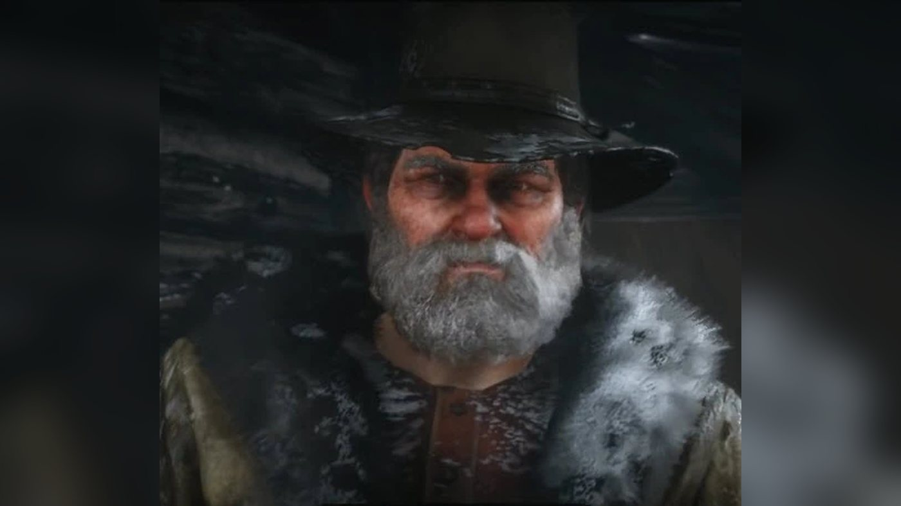
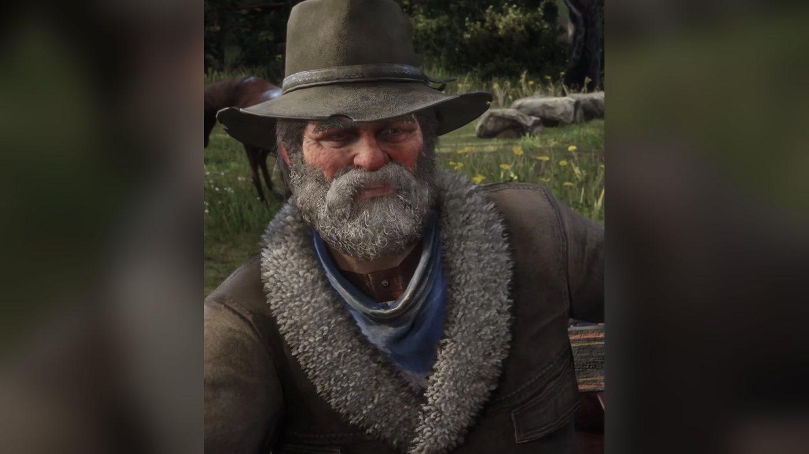
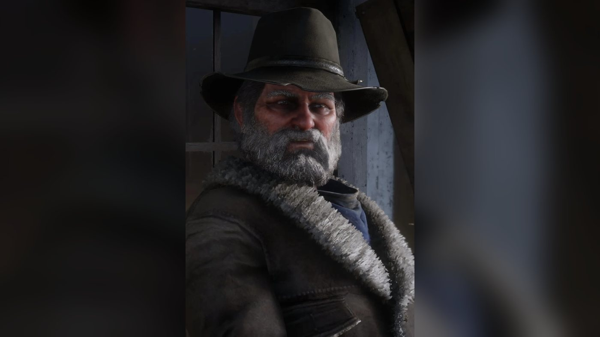
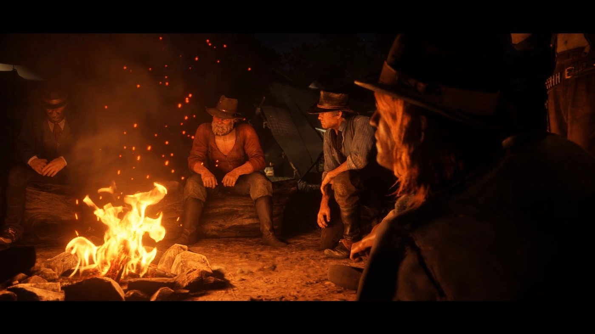
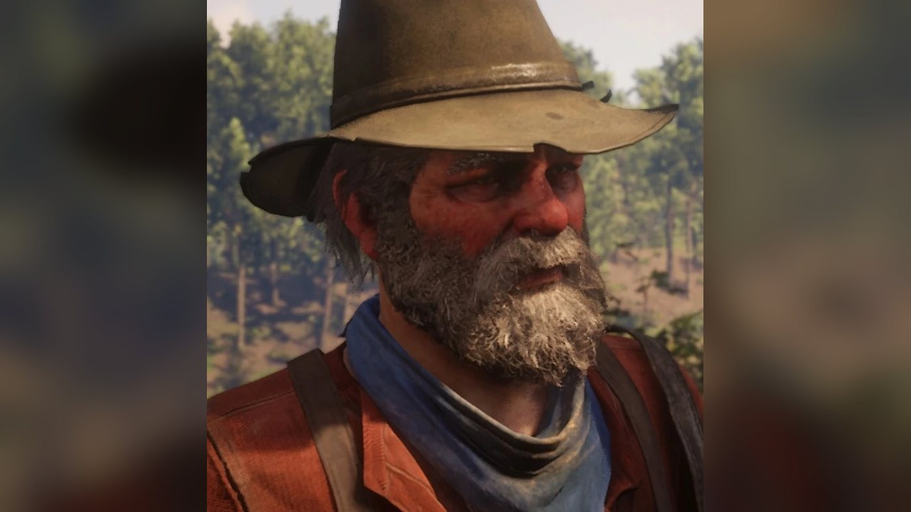
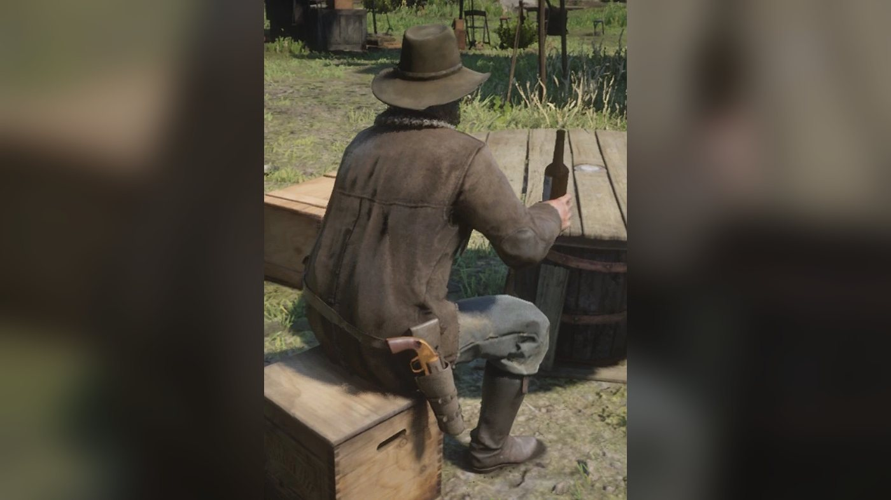
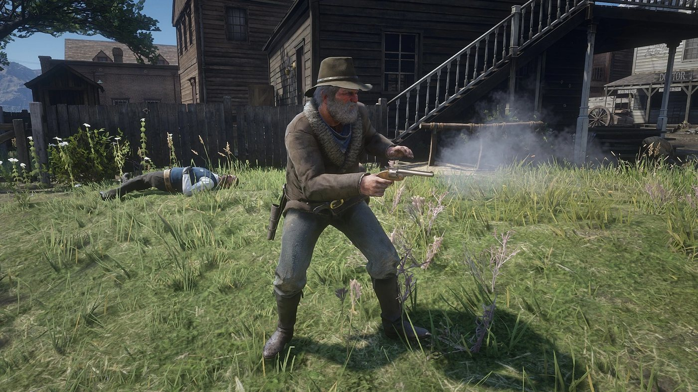
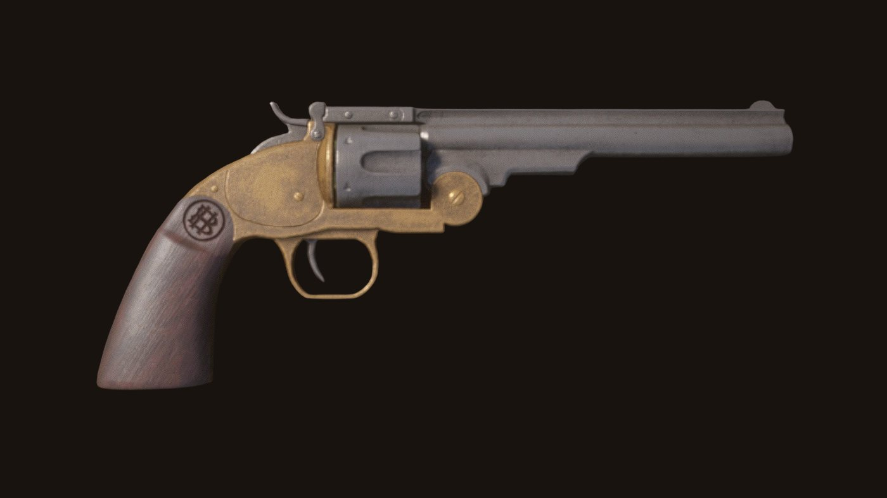
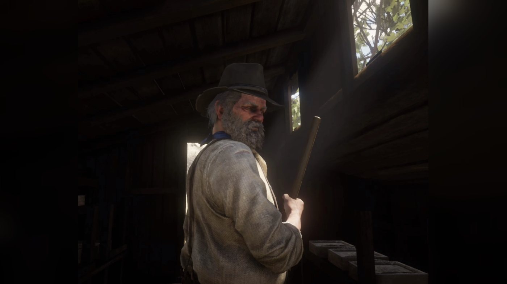
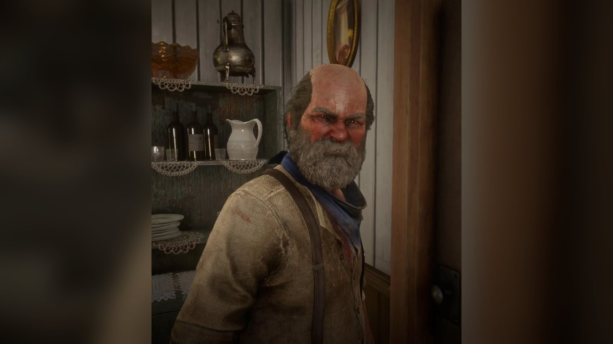
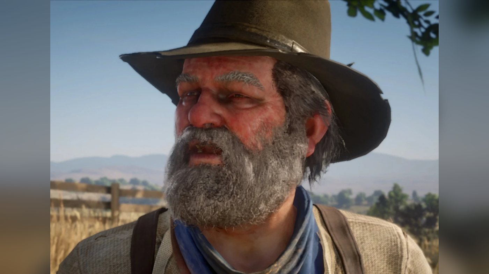
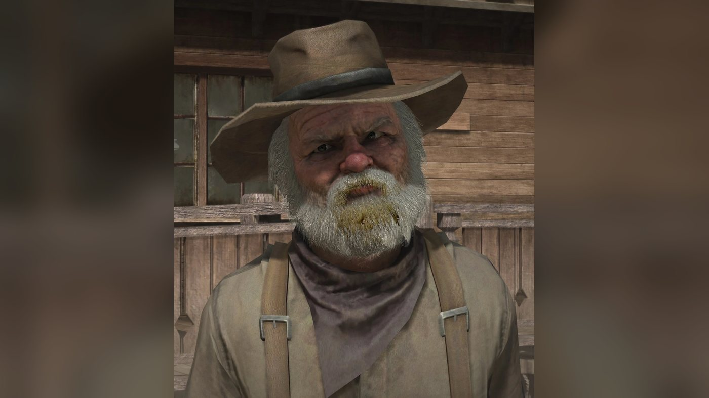
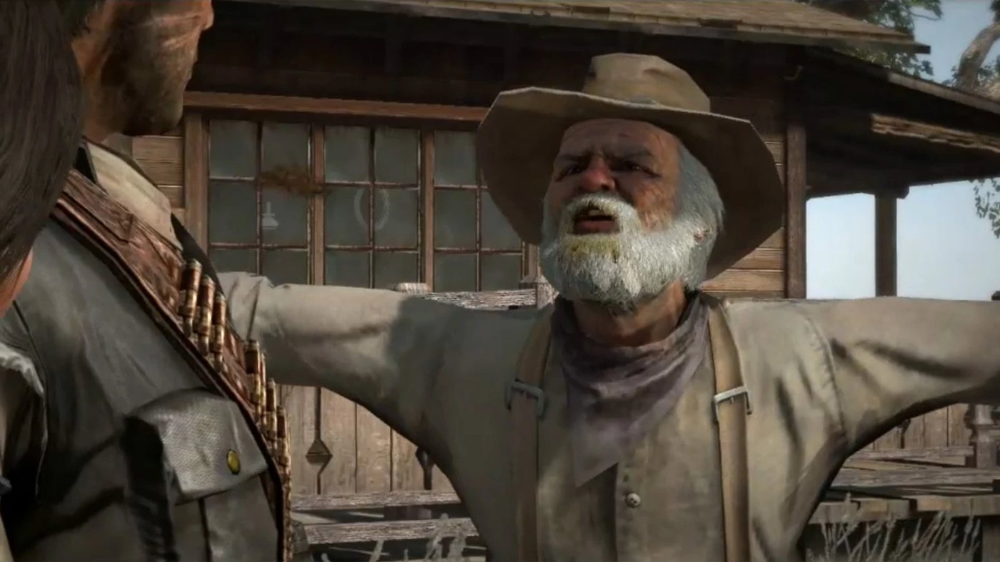
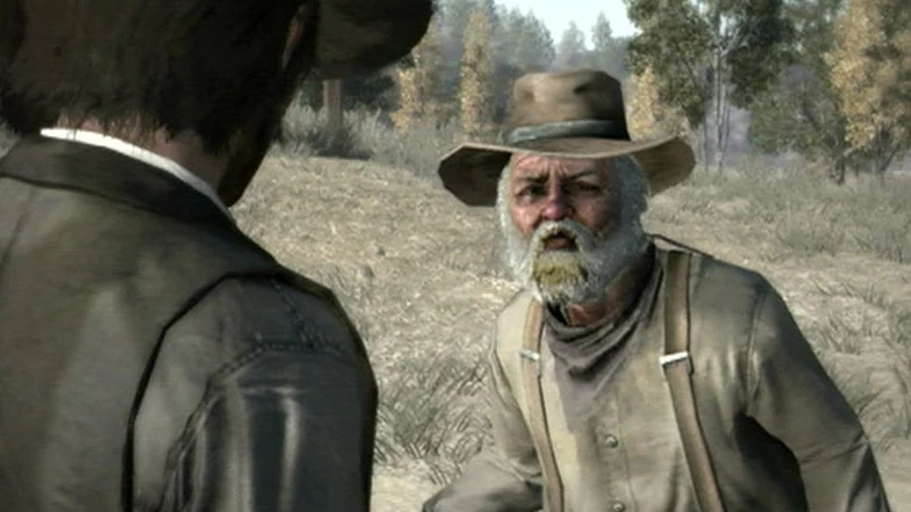
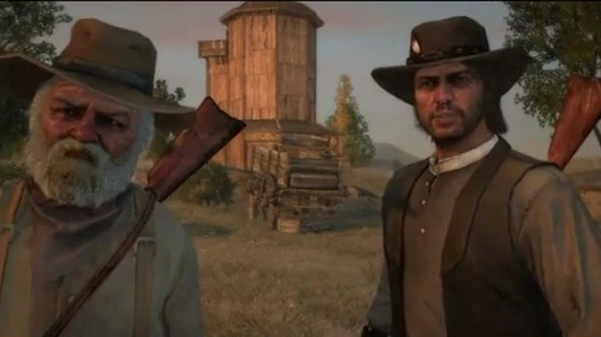
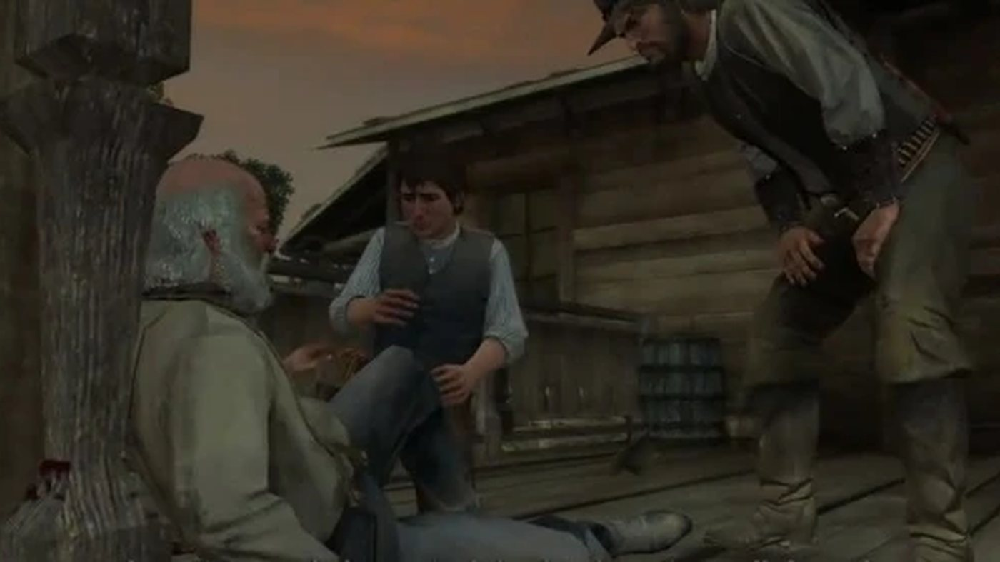
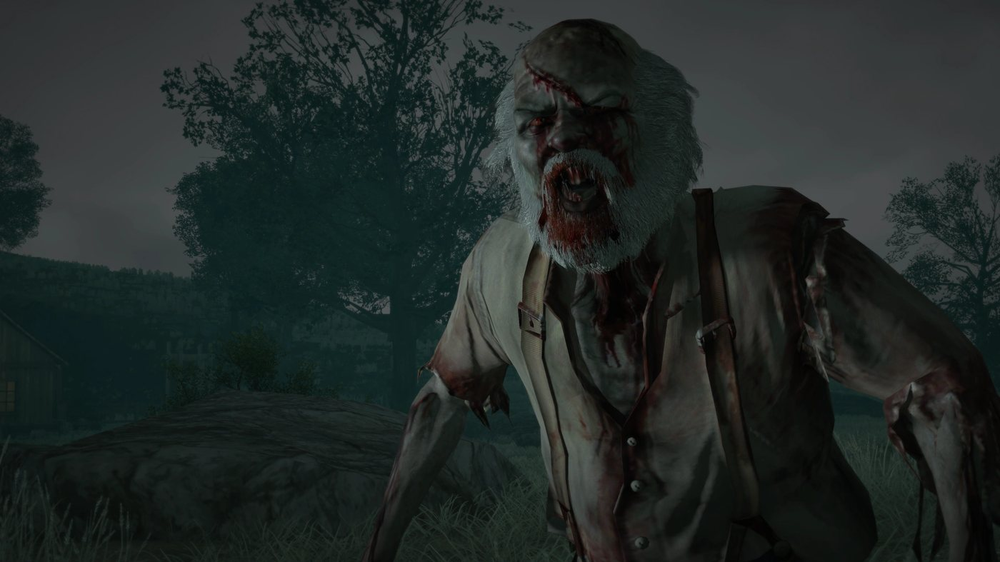